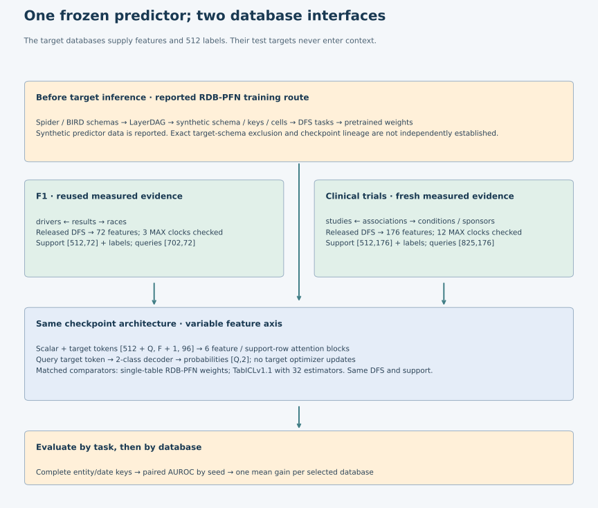
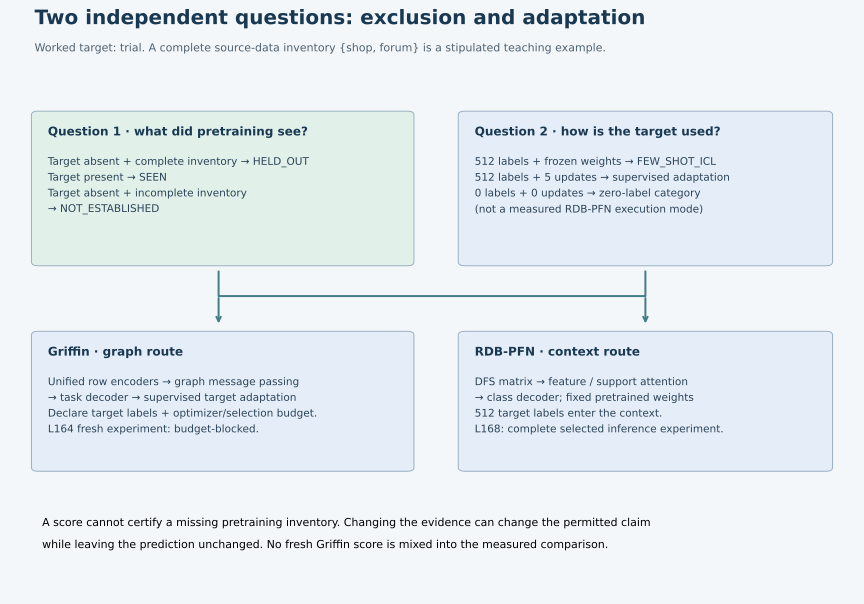
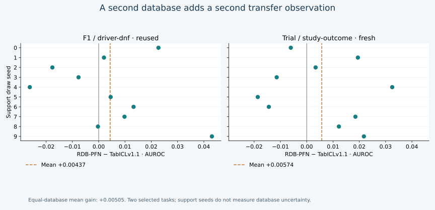

Year 5 · Quarter 1 · Lesson 168
Cross-database generalization
A model accepting a new schema is the beginning of a transfer experiment. The result becomes meaningful only after you specify what was unseen, what target information was allowed, and which databases the evidence covers.
Today’s win: build a cross-database comparison you can defend. Spend 15 minutes on the trace and explorer, then 30–45 minutes on the notebook. The default notebook rescoring is CPU-only; fresh model inference has a separate executable lane.
Student notebook · Executed solution · Quick reference · Full reproduction contract
1 · The gap left by Lesson 167¶
Lesson 167 separated the representation, pretrained prior and adaptation rule. Its 30 saved runs all concerned F1. Ten different support draws still share one database and one test population. To test a cross-database claim, change the database, preserve a defensible evaluation contract, and report each database separately.
Recall three prerequisites: a support row has a supplied label; a query row has a hidden target; a schema describes tables, columns and relationships. AUROC measures binary ranking: 0.5 is chance ranking, 1 is perfect ranking. Our mission is to test where relational modeling adds value, so the tabular comparator must receive the same available relational features and labels.
Prediction to commit: a frozen model receives 512 labeled target examples. Has it performed zero-shot prediction?
2 · Ask “unseen in which sense?”¶
In plain terms. Repeating a test with new examples from the same database asks whether a result is stable there. Moving to a different database asks a new question. Before calling that database unseen, check what reached pretraining, schema generation and target adaptation.
A random row split tests new rows in a familiar database. A temporal split tests later queries from that database. A database-held-out experiment excludes the target database from pretraining. A stronger schema-novelty claim also needs an explicit definition of schema similarity and an audit of the generator or training corpus. These claims do not follow automatically from one another.
| Question | Evidence needed | This lesson’s boundary |
|---|---|---|
| Can the same predictor process another schema? | Run its interface on the second task’s feature width | F1 has 72 DFS features; trial has 176 |
| Were target rows absent from pretraining? | Audited training lineage, including initialization | Synthetic predictor pretraining is reported; lineage not independently reconstructed |
| Is the schema itself unseen? | Defined matching rule and schema-corpus audit | Exact target-schema exclusion NOT_ESTABLISHED |
| Does transfer help this task? | Matched comparator, support and query population | Per-task paired AUROC differences |
| Does it usually help new databases? | A sufficiently broad, independently selected database sample | Two selected databases give descriptive evidence only |
The RDB-PFN paper, §5 and Appendix C.1.1 reports synthetic predictor training, while its schema generator learns from real schema corpora, citing Spider and BIRD. Synthetic cell values do not imply that the entire schema-generation process is independent of real structures. We have not reconstructed the complete checkpoint lineage or established exact target-schema exclusion. Keep the paper’s reported protocol separate from our verified inference artifacts.


The same RDB-PFN checkpoint handles both constructed feature widths. Its alternating feature and support-row attention operates on a task matrix; it does not receive raw PK/FK edges at inference. DFS supplies those relationships through joins and summaries. TabICL receives the same matrix, so the comparison tests the released predictors under matched preparation. Lesson 166 contains the complete visible checkpoint-compatible implementation.
Schema compatibility is not semantic invariance. Renaming a table is harmless only if the preparation still resolves the same relationships and values. Changing a join, dropping a child table or shuffling category meanings changes the actual information supplied. A model accepting 176 columns does not prove it understands every new schema.
3 · Separate adaptation from exclusion¶
Griffin studies transferring pretrained graph representations with supervised target adaptation. RDB-PFN uses labeled target context with frozen weights. Both can be evaluated on a database excluded from predictor training, but they spend the target labels differently. A fair comparison must declare the label budget, optimizer updates, feature access, validation selection and test population.


Worked trace: suppose the complete pretraining database list is {shop, forum}, and the target is trial. With 512 trial labels and zero updates, the target is held out of pretraining under that stipulated list, and adaptation is few-shot ICL. Five supervised updates change the adaptation classification. If the list is incomplete, holdout becomes NOT_ESTABLISHED, even if predictions stay numerically identical. If trial appears in the list, it is SEEN.
This exercise classifies a protocol, not model performance. Its hypothetical zero-label setting is not a runnable zero-label RDB-PFN mode. The measured experiment always uses 512 labels. The invalid combination of supervised updates and zero labels is rejected by the notebook contract.
Visible implementation · the claim follows the evidence¶
def transfer_regime(pretraining_databases, target_database, exposure_complete, support_labels, gradient_steps):
"""Classify database exposure separately from target-task adaptation.
A complete exposure list is an input assumption, not inferred from a model name.
Synthetic schema reuse does not by itself imply reuse of target database rows.
"""
if not isinstance(target_database,str) or not target_database or type(exposure_complete) is not bool:
raise ValueError('Explicit target and exposure completeness required')
if isinstance(pretraining_databases,str):raise ValueError('Expected database identifiers, not a string')
pretraining_databases=list(pretraining_databases)
if any(not isinstance(x,str) or not x for x in pretraining_databases):
raise ValueError('Expected a collection of database identifiers')
if any(type(x) is not int or x<0 for x in [support_labels,gradient_steps]):
raise ValueError('Label and update counts must be nonnegative integers')
if gradient_steps and not support_labels:raise ValueError('This contract covers supervised adaptation only')
seen=target_database in pretraining_databases
holdout='SEEN' if seen else ('HELD_OUT' if exposure_complete else 'NOT_ESTABLISHED')
adaptation='SUPERVISED_ADAPTATION' if gradient_steps else ('FEW_SHOT_ICL' if support_labels else 'ZERO_LABEL_ZERO_GRADIENT')
return dict(database_holdout=holdout,adaptation=adaptation)
Griffin’s Lesson 164 reproduction remains INCOMPLETE_BUDGET_GATE. We explain its adaptation procedure and cite its paper; we do not put an unrun Griffin score in the freshly measured results table.
4 · Complete selected reproduction: a second database¶
Our new experiment is RDB-PFN v5 Table 9, rel-trial / study-outcome, context size 512. All ten seeds, three fixed model arms and the entire 825-row test split are evaluated. No lighter TabICL ensemble, smaller test subset or post-test checkpoint choice is substituted. The complete F1 experiment is authenticated and rescored as reused evidence. Published targets and protocol.
| Contract | Fixed choice |
|---|---|
| Models | RDBPFN 00528; single-table checkpoint 00360; TabICLv1.1 with 32 estimators |
| New data | Released trial DFS depth-2 task; 11,994 train / 960 validation / 825 test |
| Support | 512 train rows; ten deterministic draws; identical identities across arms |
| Preprocessing | Original sorted numeric/category features; support-only median fill; original model normalization |
| Selection | Checkpoints and settings frozen before new test scores; no validation tuning |
| Evaluation | Exact (nct_id, timestamp) keys; all 30 runs; AUROC mean and sample SD |
| Stop rule | $10 aggregate cap; pilot timing gate; record incomplete work if the full protocol cannot fit |
Read the label before interpreting a probability. All 13,779 trial labels equal one minus the pinned RelBench task labels after exact study/date alignment. The original task marks a qualifying primary outcome positive when its minimum eligible p-value is at most .05 within the next 365 days. The released RDB-PFN labels reverse that orientation. Reproduce the released labels for its score; complement both labels and probabilities when discussing the original outcome direction. AUROC is unchanged when both are complemented. The released class-1 probability needs that complement before it expresses the original primary-outcome direction. Pinned task source.
Twelve exposed maximum-timestamp columns pass their owner-cutoff checks, and every training label’s 365-day horizon ends before the earliest test query. This does not certify every DFS feature or historical arrival time. We did not regenerate DFS from the full raw database. RelBench’s retrospective cohort and inferred dates retain the limitations explained in Lesson 139.
| Database / evidence | Model | Paper AUROC | Measured mean ± sample SD |
|---|---|---|---|
| rel-f1 / REUSED_L166 | RDBPFN | 0.7219 | 0.721938 ± 0.019983 |
| rel-f1 / REUSED_L166 | RDBPFN_single | 0.6640 | 0.663990 ± 0.034177 |
| rel-f1 / REUSED_L166 | TabICLv1.1 | 0.7176 | 0.717568 ± 0.009770 |
| rel-trial / FRESH_L168 | RDBPFN | 0.5986 | 0.598556 ± 0.021570 |
| rel-trial / FRESH_L168 | RDBPFN_single | 0.5961 | 0.596101 ± 0.021897 |
| rel-trial / FRESH_L168 | TabICLv1.1 | 0.5926 | 0.592820 ± 0.030357 |


RDB-PFN minus TabICL averages +0.00437 AUROC on F1 and +0.00574 on trial, positive in 6/10 and 6/10 support draws respectively. The equal-database mean gain is +0.00505. All three fresh trial means are within the predeclared .02 descriptive distance from the published values; this is not a statistical equivalence test or proof of historical data identity.
The new evidence is 30 complete trial evaluations and 24,750 fresh probabilities. The comparison also independently rescores 21,060 reused F1 probabilities. Both selected task means favor RDB-PFN over TabICL, but seed-level reversals and only two databases prevent a broad-superiority claim. The small trial gain over its single-table ablation also cautions against attributing every gain to the relational prior.
5 · Aggregate at the unit of the claim¶
For database d and support seed s, compute delta[d,s] = AUROC(RDBPFN) − AUROC(TabICL). Pair by database and seed, after matching all query and support identities. Average the ten deltas within each database. Then give each selected database one weight in the macro mean.
Hand-worked counterexample: a small database gains +0.10 and a large one loses −0.20. Their equal-database macro gain is (0.10 − 0.20)/2 = −0.05, regardless of row counts. Pooling predictions from different tasks changes the estimand: score scales and target meanings differ. Counting ten support draws as ten independent databases also overstates the evidence. The plotted sample SD describes support-selection variation on a fixed test population; it is not a confidence interval over new databases.
An estimand is the quantity the comparison is meant to measure. Here it is the mean task-level gain across the two selected databases. Macro means each database contributes equally. SD means standard deviation, the spread of the ten support-draw results; changing those draws does not create additional databases.
The notebook makes you implement three load-bearing functions: classify exposure/adaptation, assemble complete paired gains, and calculate the equal-database macro. These functions feed the actual saved-evidence audit and final table. Checks reject a missing seed, duplicate run, mismatched test count and mixed metric; the raw audit separately rejects wrong keys, supports, labels and hashes.
6 · Exit: write the claim you can defend¶
Fill the cross-database table and defense: exposure evidence, representation, label budget, updates, metric, measured/reused status and unresolved limits. Write 250–400 words answering: What did the trial run add beyond F1? What would a third database add? What evidence would establish exact schema novelty?
Pass rubric: 0–2 each for exposure, adaptation, pairing, aggregation and evidence limits; target ≥8/10, no zero, and teacher review. Running the solution is author verification, not learner mastery: PENDING_WRITTEN_DEFENSE.
Primary reading: RDB-PFN §6.1, Appendix A.3, C.1.1 and Table 9. Read Griffin’s transfer experiments to locate its target adaptation budget. Ask me follow-up questions about any step—especially the difference between verified inference, reported training provenance and schema novelty.
Next: Lesson 169 asks what scale and diversity evidence we would need before calling these observations a scaling law.